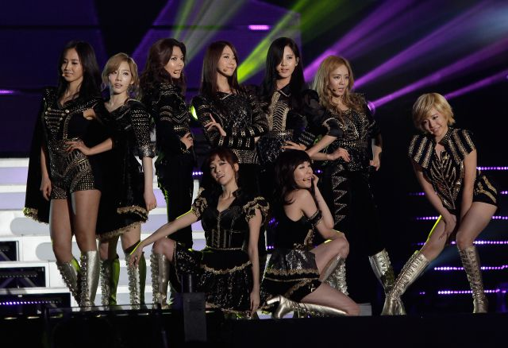

El K-Pop es un género musical original de Corea del Sur (Korean Pop) que surge a principios de los años 90. Y es que no solo de la producción de productos electrónicos puede vivir un país de más 50 millones de habitantes, que a diferencia de sus vecinos “mala conducta” del norte viven una apertura total al mundo occidental.
Su música suele estar influenciada por diversos géneros musicales occidentales que han sido adaptados al mercado asiático como el jazz, hip-hop, reggae, electrónica y pop entre otros. En la actualidad, hablar de K-Pop va más allá del género musical, se trata de un movimiento cultural centrado en los K-pop Idols que no son otra cosa que artistas "casi perfectos" fabricados a medida por una industria basada en agencias de talentos que forman estos K-pop Idols Coreanos como estrellas para el entretenimiento con proyección internacional.
La agencia audiciona y selecciona los futuros talentos que pasan entonces a la "Escuela de K-pop" donde serán formados y entrenados para el mercado musical. Se les enseña idiomas, baile, canto y formación musical. Una vez superado el proceso y posterior selección de los mejores (Idols), los afortunados pasarán a formar parte de Grupos como EXO, BTS y Girls’ Generation. Estos procesos de formación representan una fuerte inversión por parte de las agencias que pueden alcanzar cantidades de hasta 3 millones de dólares por Idol.

KARD
KARD es un grupo mixto surcoreano formado por la empresa DSP Media en 2016. Su nombre es un acrónimo de las palabras King, Ace, JokeR, HiDden que son cartas en una baraja, refiriéndose a que juntos forman un "grupo perfecto".
COMEBACK DE KARD
Musica: Hola Hola
«Hola Hola» es una canción del grupo surcoreano Kard, lanzada como la canción principal de su primer extended play del mismo nombre (2017). Fue lanzado por DSP Media y distribuido por LOEN Entertainment en conjunto con el EP el 19 de julio de 2017. Un video musical también fue lanzado el 19 de julio.